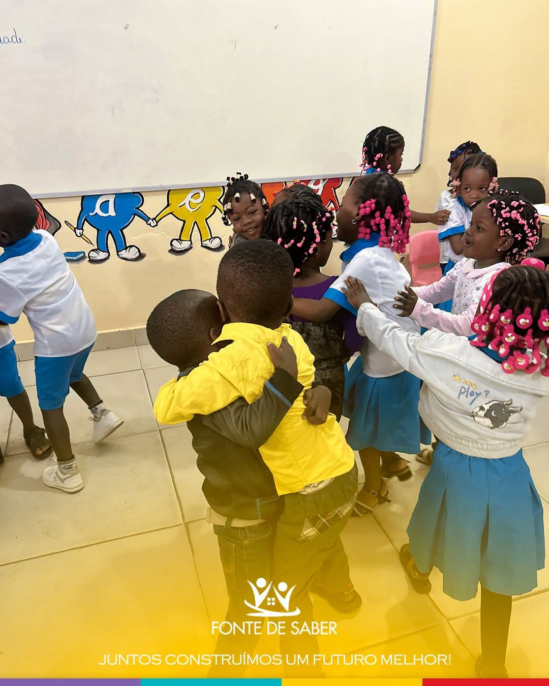

Iniciação à 9ª Classe
Ensino Geral
Jardim de Infância e Ensino Primário
- Iniciação
- 1ª Classe
- 2ª Classe
- 3ª Classe
- 4ª Classe
- 5ª Classe
- 6ª Classe
Ensino Secundário — I Ciclo
- 7ª Classe
- 8ª Classe
- 9ª Classe